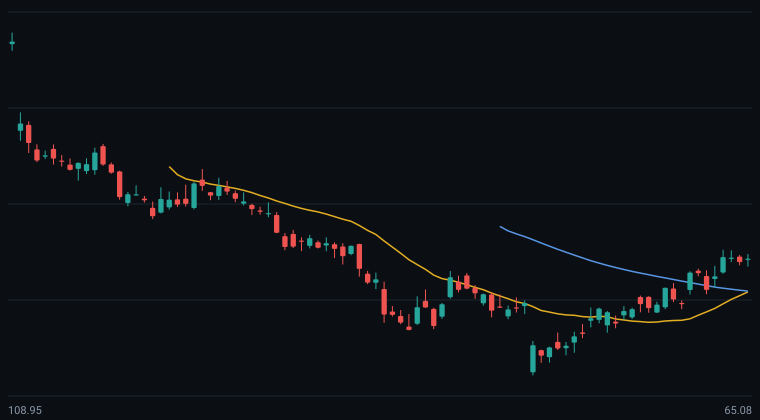

streaming entertainment — daily chart with 20-day and 60-day moving averages.

Technical Snapshot: NFLX closed at 78.16 on the latest daily bar (change -0.10%). Price is above both the 20-day (72.78) and 60-day (76.77) averages. MACD DIF is above DEA. RSI-14 at 62 (firm zone). The price sits at 49% of its 60-bar range. Volume ~0.6x the 20-day average (in line).
| Metric | Value |
|---|---|
| Recent reference support | 67.67 |
| Recent reference resistance | 76.90 |
| 60-bar range low / high | 65.08 / 90.37 |
| MA5 / MA10 / MA20 / MA60 | 76.34 / 75.06 / 72.78 / 76.77 |
Open NFLX in the interactive AI24X Markets charting workbench — add indicators, switch periods, and get the AI technical-health brief.
Explore NFLX freeNVDA · AAPL · TSLA · MSFT · AMZN · META · GOOGL · AMD · PLTR · All guides
This content is for educational purposes only and is not investment advice. Market data is delayed at least 15 minutes.